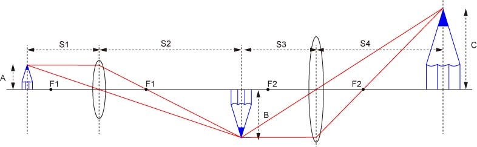
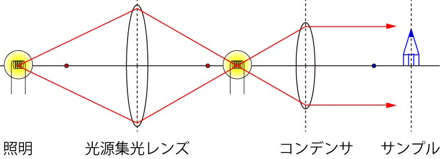

明視野顕微鏡は，顕微鏡の基本となる照明システムです．
像の拡大の原理は，

であり，
照明方法は，

のように，ケーラー照明となります．
さて，上記の手法で，対象物を拡大して，ＣＣＤなどに投影して結像させるのが明視野の基本ですが，その大前提として，
光の状態が物体によって変化しなくてはならない
その変化を，検出器（ＣＣＤ，眼）が認識しなくてはならない
があります．
逆を言うと，上記の２項目が満たされないと我々は像として認識できないのです．
では，まず
光の状態が物体によって変化する
とは，光の
波長，振幅，位相
が変化することに相当します．
しかし，我々の眼，ＣＣＤがその変化を認識できるのは，
色：波長
強さ：振幅
のみです．
つまり，波長，振幅が変化しないと我々はそこに物体があることすらわからないのです．
では，生物試料はどうでしょう？
生物試料はそのほとんどが水でできています．
種によっては９０％以上が水です（クラゲなど）．
水は光（可視光）に対して，
ほとんど波長を変化させない
ほとんど強度も変化させない
物質なので，ほとんど水でできている生物試料は明視野においてはうっすらとした像（コントラストの低い）にしかなりません．
内部の詳細について理解するのには非常に困難です．
そこで，登場したのが，次に述べる新しい光学系を持った顕微鏡なのです．